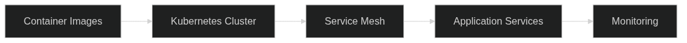

FINOS Project Blueprint: Operationalising Architecture as Code
The FINOS Project Blueprint initiative exists to prove that open collaboration can harden architectural practice without adding bureaucracy. It inherits the "Architecture as Code" ethos that this repository documents in depth, treating every artefact—from design rationale to production telemetry—as code subject to automated governance. By combining the automation foundations described in the book's technical chapters with the Common Architecture Language Model (CALM), the blueprint offers a reusable playbook for regulated financial organisations that want to modernise safely and transparently.【F:docs/05_automation_devops_cicd.md】【F:references/calm_what_is_excerpt.txt】

Blueprint Objectives and Context
Project Blueprint takes its cues from the end-to-end publishing workflow that powers this manuscript: a collection of markdown sources, configuration files, and CI pipelines orchestrated as code so that every change is auditable, reproducible, and quality-assured.【F:docs/appendix_b_technical_architecture.md】 The project reframes that approach for domain-specific platforms—banking APIs, trading analytics, risk models—where architectural drift carries material risk. The goal is to codify a collaborative template that:
- preserves rapid experimentation by embedding architectural checks directly into delivery pipelines;
- balances autonomy and alignment through shared design primitives and governance automation; and
- elevates architecture from static documentation to a living asset shaped collectively by product teams, control functions, and external contributors.
FINOS already demonstrates that such ambitions are credible. Its community maintains specifications, reference implementations, and data models under open governance, making it a natural home for a blueprint that codifies architectural intent as executable artefacts.【F:docs/appendix_b_technical_architecture.md】 Within that context, Project Blueprint provides the connective tissue between CALM’s modelling constructs and the delivery mechanics that keep the book's own production pipeline reliable. The combined approach supports regulated institutions that must prove both technical rigour and collaborative transparency.
Principles Anchored in CALM
CALM defines the structural language that Project Blueprint adopts for architectural modelling. Nodes articulate the systems, services, and even personas involved; relationships map the flows, dependencies, and protocols between them; and metadata captures compliance posture, lifecycle state, and operational annotations.【F:references/calm_what_is_excerpt.txt】 By describing blueprints with CALM, the initiative achieves three outcomes:
- Consistent communication: A shared vocabulary ensures that architects, engineers, and regulators can interpret the model the same way without translating between diagramming conventions.【F:references/calm_what_is_excerpt.txt】
- Automated assurance: CALM’s machine-readable structure enables validation tooling to verify policy conformance and architecture-quality attributes alongside code builds.【F:references/calm_what_is_excerpt.txt】
- Traceable evolution: Version-controlled CALM artefacts capture the reasoning behind architectural shifts, aligning with the repository’s insistence on immutable histories and reproducible builds.【F:docs/05_automation_devops_cicd.md】【F:references/calm_what_is_excerpt.txt】
These principles make CALM the semantic backbone of Project Blueprint. Each blueprint package ships with CALM definitions for baseline platform components, recommended relationships for service integration, and metadata schemas that describe compliance attestation, data residency, and operational status. Downstream teams can extend the schema without breaking the shared vocabulary, preserving interoperability while allowing context-specific nuance.【F:references/calm_what_is_excerpt.txt】
Operating Model and Team Design
A blueprint cannot thrive without an organisational structure that respects both technical autonomy and shared accountability. Chapter 17 emphasises that Architecture as Code transformations succeed when cultural change, capability development, and governance mature together.【F:docs/17_organisational_change.md】 Project Blueprint adopts the Infrastructure Platform Team blueprint from Appendix A as its default operating model, giving every participating organisation a head start on team composition, skills, and working agreements.【F:docs/30_appendix_code_examples.md】 The template recommends a seven-person core team with defined roles:
- A product-oriented team lead responsible for strategic direction, stakeholder engagement, and roadmap stewardship.
- Senior infrastructure engineers who own Architecture as Code modules, platform automation, and technical mentoring.
- Security engineers dedicated to policy-as-code, threat modelling, and compliance automation.
- Platform automation engineers focused on CI/CD, observability, and developer experience.
- Site reliability engineers accountable for incident response, capacity planning, and performance optimisation.
The blueprint documents working agreements, success metrics, and decision-making patterns so that teams avoid reinventing social contracts for collaboration.【F:docs/30_appendix_code_examples.md】 It also reinforces the cultural expectations from Chapter 17: psychological safety, cross-functional feedback loops, and transparent change management are treated as non-negotiable guardrails rather than optional extras.【F:docs/17_organisational_change.md】 Communities of practice, mentoring schemes, and structured learning budgets extend those guardrails to the wider organisation, preventing capability bottlenecks and reinforcing the open community ethos that FINOS champions.【F:docs/17_organisational_change.md】【F:docs/24_best_practices.md】
Automation Spine and Delivery Mechanics
Project Blueprint’s delivery foundation mirrors the CI/CD architecture laid out in Chapter 5. Continuous integration, automated testing, and declarative configuration are treated as the backbone of the programme, not just technical hygiene.【F:docs/05_automation_devops_cicd.md】 Every blueprint repository includes pipeline templates that execute multi-track validations across application, data, infrastructure, security, and governance domains so that architectural integrity is enforced holistically.【F:docs/05_automation_devops_cicd.md】 Immutable infrastructure definitions, policy checks, and integration tests run as peers, ensuring that CALM models remain executable rather than aspirational diagrams.【F:docs/05_automation_devops_cicd.md】【F:docs/05_automation_devops_cicd.md】
Automation extends beyond code correctness. The blueprint prescribes cost-monitoring hooks, data-residency validations, and evidence-pack generation for regulatory review, reflecting the book’s guidance on balancing efficiency with statutory obligations.【F:docs/05_automation_devops_cicd.md】 Integration with CALM metadata means that pipeline runs can assert which architectural nodes changed, what relationships were affected, and whether mandatory annotations—such as privacy impact flags—remain complete. The end result is a delivery system where architecture, implementation, and compliance artefacts advance together.
Evidence export for reuse
Project Blueprint repositories include opinionated evidence pipelines that align with the assure once, comply many principle. Every change triggers automated policy evaluations, configuration snapshots, and CALM metadata diffs. Artefacts are stamped with control identifiers and linked to framework mappings so that downstream consumers—risk teams, auditors, or regulator portals—can re-use the same evidence package instead of requesting bespoke exports. Evidence manifests follow the conventions described in Evidence as Code and feed the Control Mapping Matrix, allowing platform teams to demonstrate coverage across ISO 27001, SOC 2, NIST 800-53, GDPR, and internal catalogues without duplicating work.
Governance, Risk, and Financial Stewardship
Sustained adoption depends on governance that empowers teams rather than slowing them down. The best-practice chapters argue for policy-as-code enforcement, data-informed risk management, and FinOps integration—elements that Project Blueprint treats as first-class deliverables.【F:docs/24_best_practices.md】 Blueprint packages include reusable policy libraries, automated approval workflows calibrated to change blast radius, and dashboards that expose conformance trends to senior stakeholders. Financial guardrails—automatic shutdown schedules, tagged cost centres, predictive spending alerts—are templated so that value-for-money conversations remain evidence-based.【F:docs/24_best_practices.md】
Governance responsibilities are shared across the platform team and contributing product squads. CALM metadata captures which controls apply to each architectural node, enabling selective enforcement and exception management without manual spreadsheets.【F:references/calm_what_is_excerpt.txt】 When the pipeline blocks a change, remediation guidance is generated automatically, echoing the repository’s emphasis on transparency and rapid feedback.【F:docs/24_best_practices.md】【F:docs/05_automation_devops_cicd.md】 The blueprint also anticipates supplier management: evaluation scorecards, joint innovation forums, and exit strategies are codified to keep vendor ecosystems aligned with architectural intent.【F:docs/24_best_practices.md】
Observability and Resilience Patterns
Project Blueprint packages observability, reliability, and global scaling considerations so that adopters receive actionable defaults rather than abstract guidance. Drawing on Chapter 24’s recommendations, each blueprint documents telemetry standards, distributed tracing integration, synthetic testing regimes, and sustainability indicators that feed shared operations dashboards.【F:docs/24_best_practices.md】 Resilience playbooks describe replication, traffic steering, and failover choreography for multi-region deployments, helping teams expand into new territories without re-architecting their foundations.【F:docs/24_best_practices.md】 Risk-management templates tie these technical safeguards to business continuity commitments, ensuring that operational disruption does not cascade into customer harm.【F:docs/24_best_practices.md】
The blueprint also codifies learning loops for resilience. Runbooks for incident response, capacity drills, and retrospective formats are embedded alongside CALM metadata so that the human response to outages is as repeatable as the automated safeguards. Such integration reinforces the cultural message from Chapter 17: resilience is a shared responsibility supported by transparent rituals and metrics.【F:docs/17_organisational_change.md】
Integrating with the Architecture as Code Toolchain
Implementing Project Blueprint means reusing the technical scaffolding already proven in this repository. The book’s build scripts demonstrate how markdown content, diagrams, and configuration files flow through reproducible pipelines to generate PDFs, websites, and whitepapers with minimal manual intervention.【F:docs/appendix_b_technical_architecture.md】 Project Blueprint borrows the same philosophy: blueprint packages include scripts that render CALM models into documentation portals, reference diagrams, and compliance attestations, ensuring that human-readable artefacts never drift from their code counterparts.
GitHub Actions remains the default automation platform. Workflows derived from build-book.yml provide the scheduling, dependency installation, caching, and artefact publishing patterns that blueprint adopters can replicate for their own domains.【F:docs/appendix_b_technical_architecture.md】 Additional workflows generate presentation decks and whitepapers tailored to stakeholder audiences, mirroring the repository’s approach to multi-format publishing.【F:docs/appendix_b_technical_architecture.md】 By leaning on existing, battle-tested automation, Project Blueprint reduces operational risk and accelerates onboarding for contributors already familiar with FINOS tooling.
Implementation Roadmap and Adoption Strategy
Successful adoption mirrors the transformation journey outlined in Chapter 17: start with targeted pilots, iterate through progressive capability stages, and measure progress with leading indicators rather than vanity metrics.【F:docs/17_organisational_change.md】 Project Blueprint recommends a four-phase rollout:
- Pilot and prove: Select a non-critical product or shared service, import the blueprint, and exercise the pipelines end-to-end. Capture lessons about CALM modelling, policy coverage, and team ceremonies.
- Expand and federate: Onboard additional teams, using the blueprint’s competency frameworks and mentoring patterns to build confidence outside the initial cohort.【F:docs/17_organisational_change.md】【F:docs/30_appendix_code_examples.md】
- Govern and optimise: Introduce shared dashboards for compliance, cost, and resilience, leveraging the blueprint’s policy-as-code modules and FinOps templates to harmonise decision making.【F:docs/24_best_practices.md】
- Sustain and innovate: Allocate explicit time for experimentation, conference participation, and continuous learning so that the platform evolves alongside business ambitions.【F:docs/30_appendix_code_examples.md】【F:docs/17_organisational_change.md】
Throughout the rollout, teams should track deployment frequency, recovery time, and developer sentiment to verify that automation delivers measurable improvements rather than superficial activity.【F:docs/17_organisational_change.md】 The blueprint’s pre-defined success metrics—deployment lead times, incident resolution targets, satisfaction scores—offer a benchmark for judging whether the programme is creating sustainable capability.【F:docs/30_appendix_code_examples.md】 When gaps appear, CALM’s extensibility lets teams evolve the model without sacrificing alignment, keeping the blueprint responsive to emerging regulation or technology shifts.【F:references/calm_what_is_excerpt.txt】
Collaboration and Community Stewardship
Open governance is a defining trait of FINOS initiatives, and Project Blueprint embeds that philosophy by default. The Infrastructure Platform Team blueprint lists bi-weekly demos, monthly steering updates, and quarterly business reviews to keep stakeholders engaged and informed.【F:docs/30_appendix_code_examples.md】 Combined with CALM’s transparent modelling and the automation pipelines’ audit trails, these rituals ensure that contributors across institutions can collaborate without ambiguity over ownership or expectations. Communities of practice and shared retrospectives bridge organisational boundaries, allowing teams to exchange improvements, document patterns, and propose schema extensions through transparent pull requests.【F:docs/17_organisational_change.md】 The blueprint encourages institutions to upstream enhancements—new policy modules, improved observability patterns, domain-specific metadata—so that the wider FINOS ecosystem benefits from collective experimentation.
Outcome Vision
Project Blueprint is ultimately a catalyst for cultural and technical convergence. By grounding architectural collaboration in CALM, aligning teams with proven operating models, and automating every aspect of delivery and governance, FINOS members can accelerate innovation without sacrificing control. The blueprint scales globally, supporting multi-region deployments, resilient operations, and sustainable cost management out of the box.【F:docs/24_best_practices.md】 It complements the Architecture as Code publishing toolchain, reinforcing the lesson that documentation, automation, and organisational practice are inseparable when architecture becomes code.【F:docs/appendix_b_technical_architecture.md】
Adopting the blueprint means embracing a living system: CALM models evolve with the platform, CI/CD pipelines enforce policy and quality, and communities shepherd the operating model through continual improvement. The outcome is a federated, transparent, and resilient architecture discipline that matches the ambition of the FINOS community while retaining the human-centred practices that make collaboration sustainable.【F:docs/17_organisational_change.md】【F:references/calm_what_is_excerpt.txt】